| 栏 | 版面由谁定 | 主流程模型（写版面指导） | 写结论的模型 | 思考 |
|---|---|---|---|---|
| 改前 | 旧版提示词：结论框、指标卡、图、短解读，顺序固定 | 不参与（要明细、问口径、纠错三道题带一句人工写的指导） | 内网 GLM 5.3 Flash | 不思考 |
| 改后 | 第三版提示词：有写作指导就照它排，没有就按原则自己定 | 没有用模型（同上，三道题是人工写的指导，其余四道没有指导） | 内网 GLM 5.3 Flash | 高思考 |
七类自造的题，改前改后用的是同一份数据和同一份写作指导，都由内网 GLM 5.3 Flash 成稿、前端真实渲染器出图。改前 = 现在线上的提示词；改后 = D 槽开着（版面不固定，思考强度按中档取"高"）。数字为虚构。
提问：昨天云顶牌局的回归用户数是多少
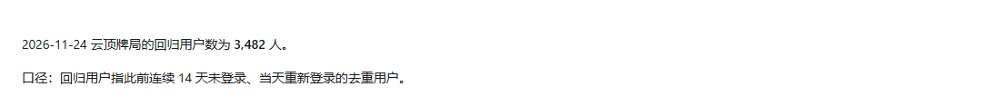
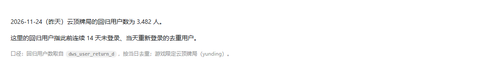
提问：云顶牌局近7天充值金额对比前7天怎么样
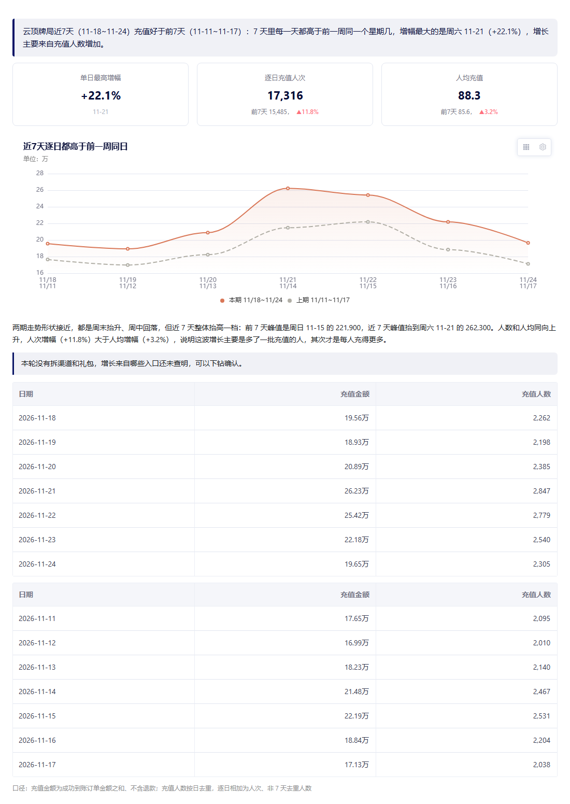
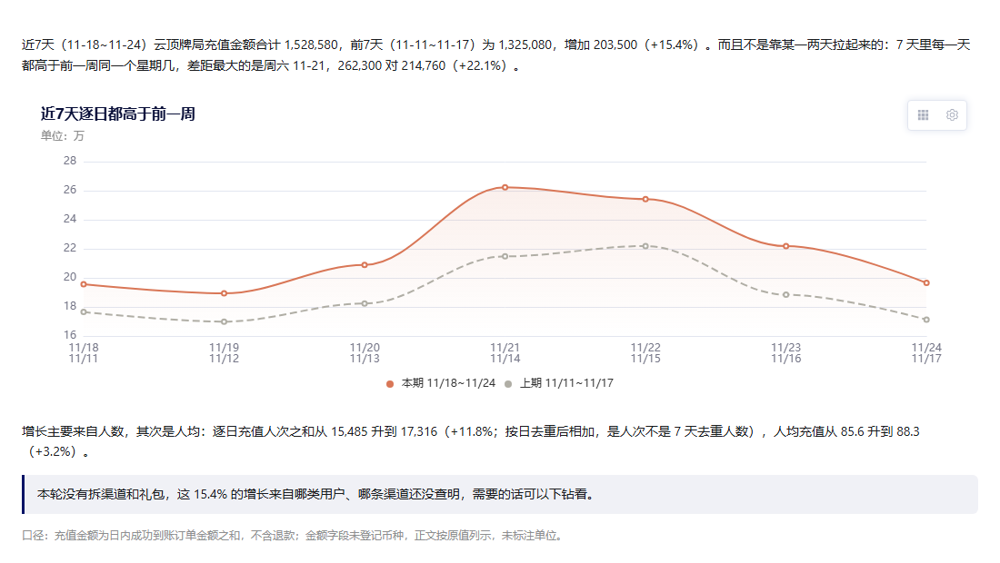
提问：云顶牌局 11月23日首充用户数为什么掉了
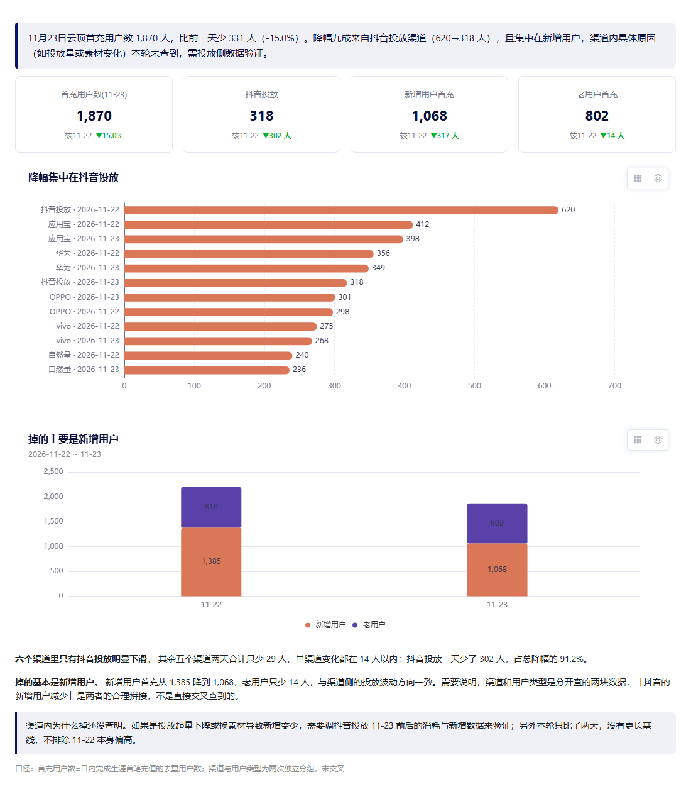
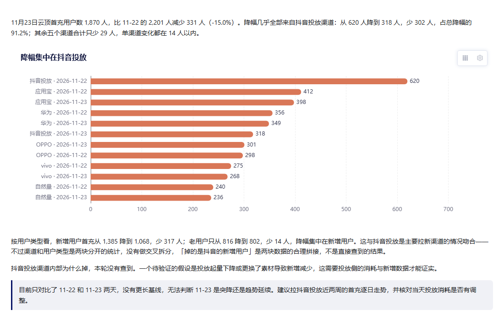
提问：星辉杯最近8天，用户按当日对局数分档的人数和占比是怎样的
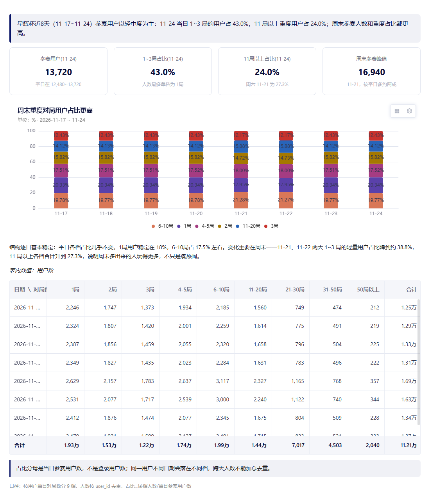
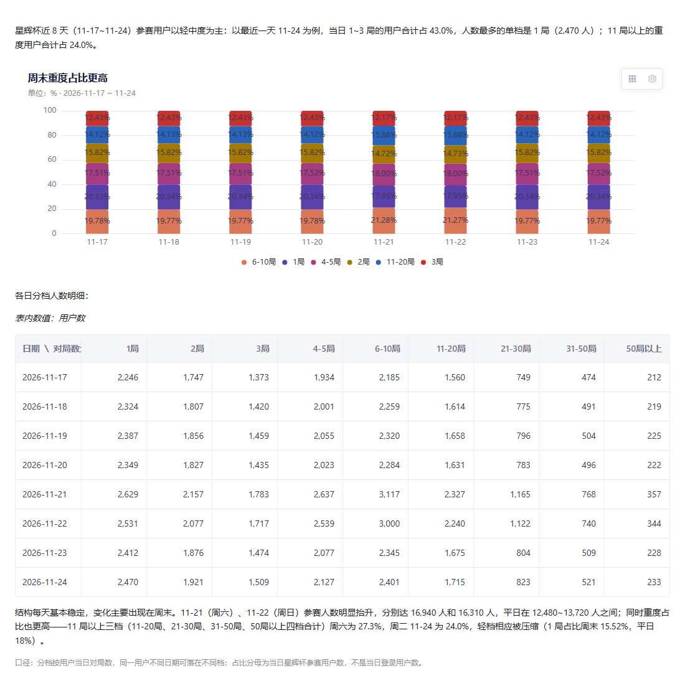
提问：把玩家 80231764 近10天每天参与了哪些活动模块列个表给我
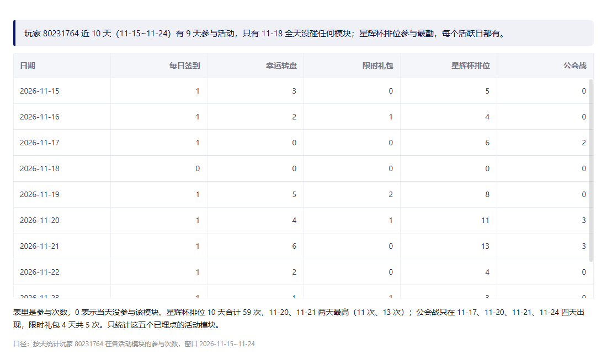
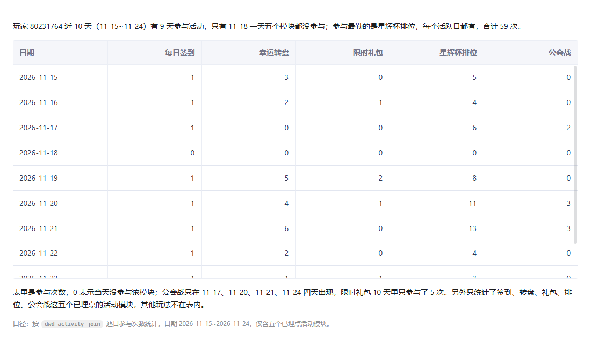
提问：上面的付费率是怎么算的
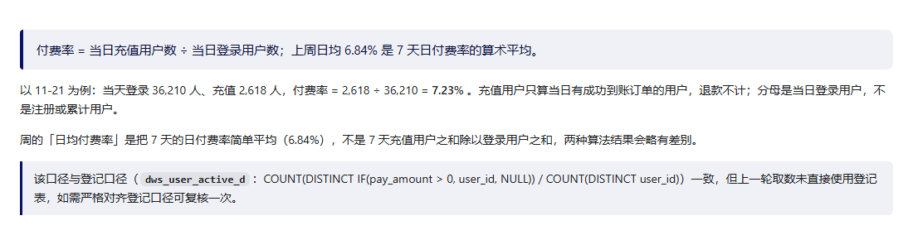
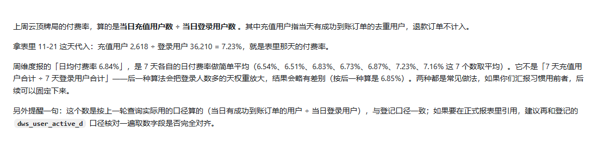
提问：上一轮的人均充值算错了，应该除以充值用户数而不是登录用户数，重算一下
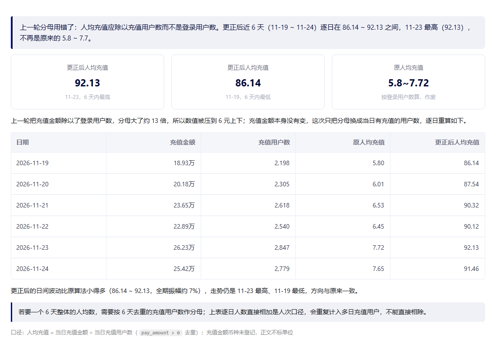
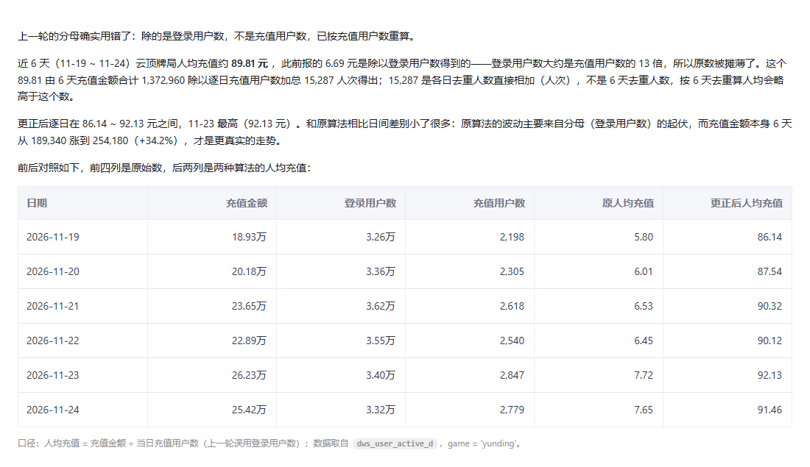